Gallery / Gardening
Gardening
Gardeners, cactus ladies and backyard farmers among their flowers.

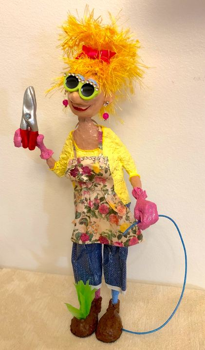
2 views
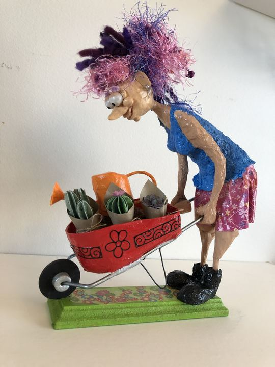
 2 views
2 views
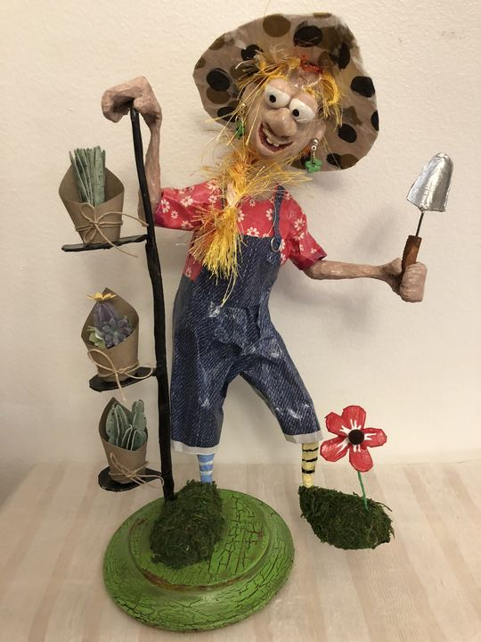

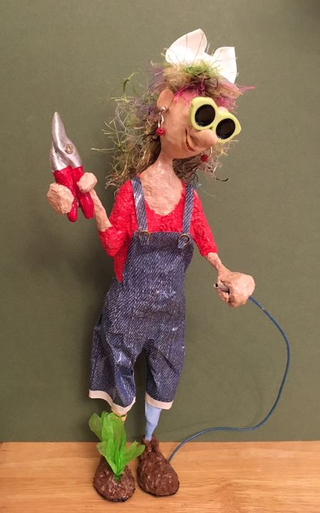

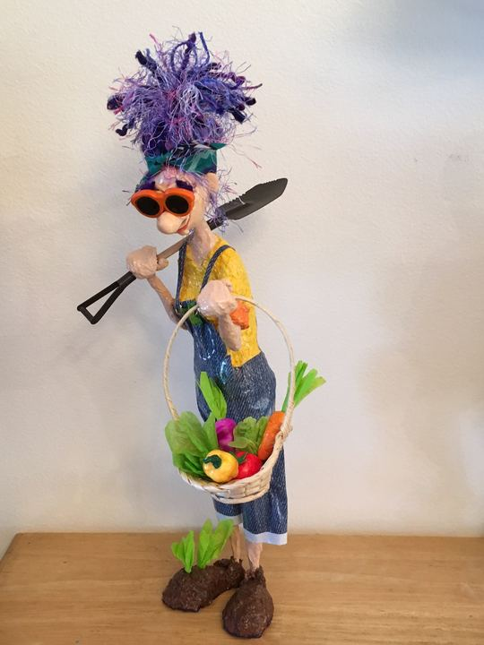
2 views
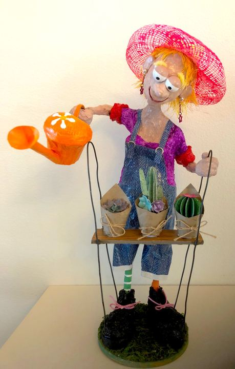

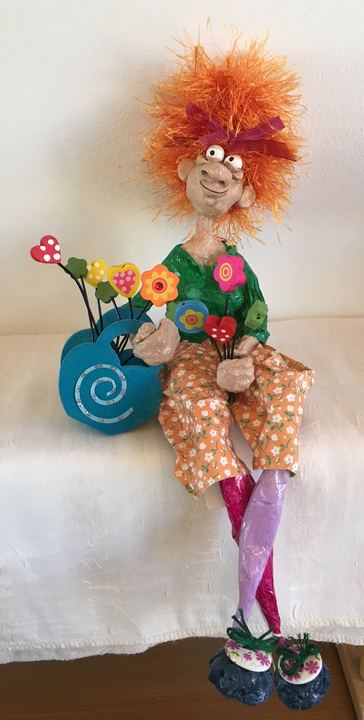

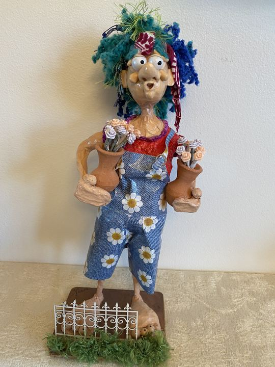

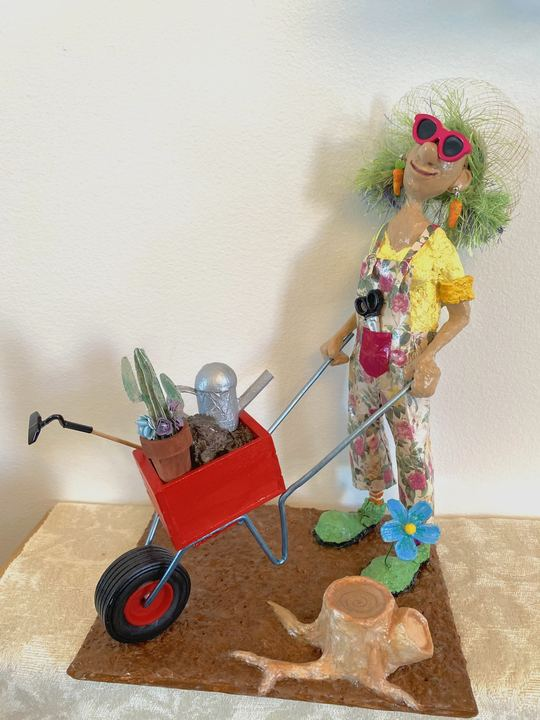
2 views
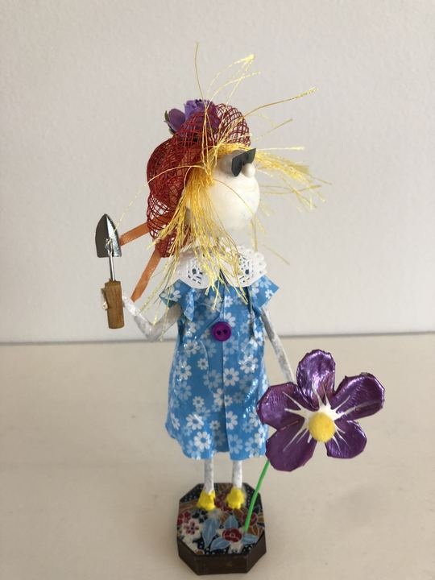

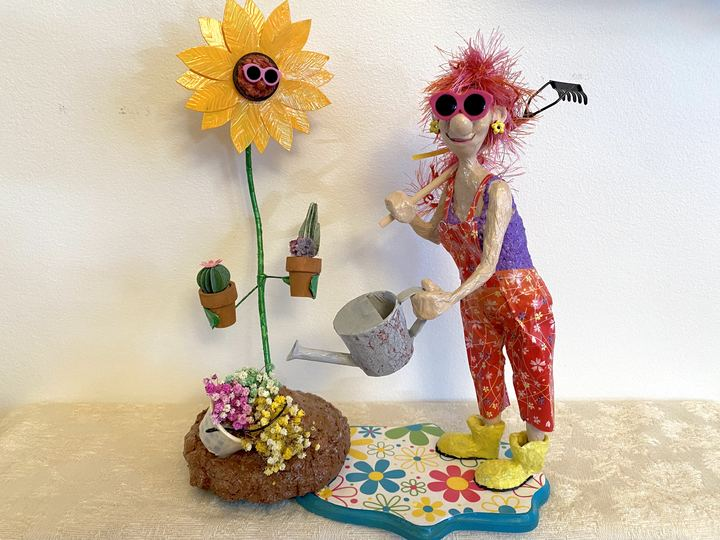

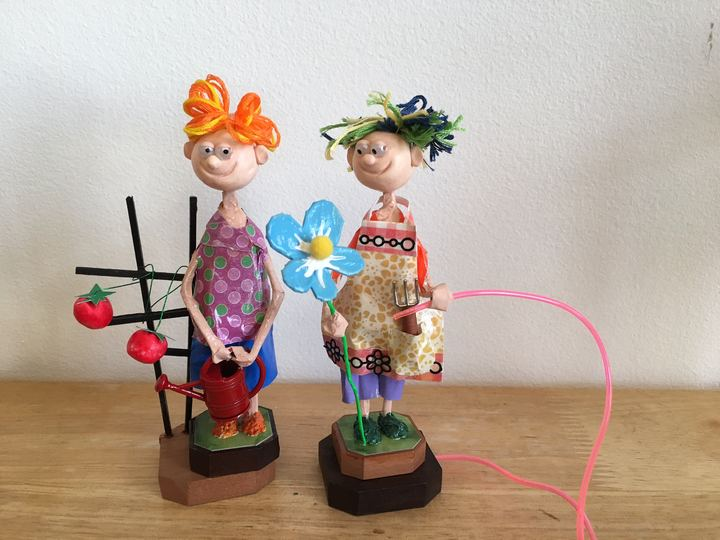

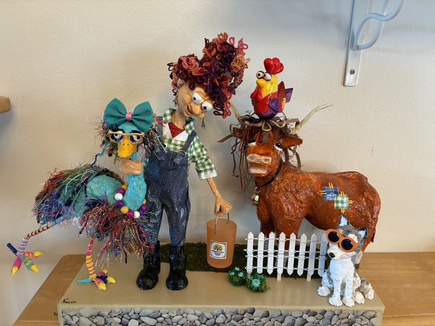
Love one of these? Most pieces are one-of-a-kind, but I’m happy to create something similar just for you.
Ask about a commission